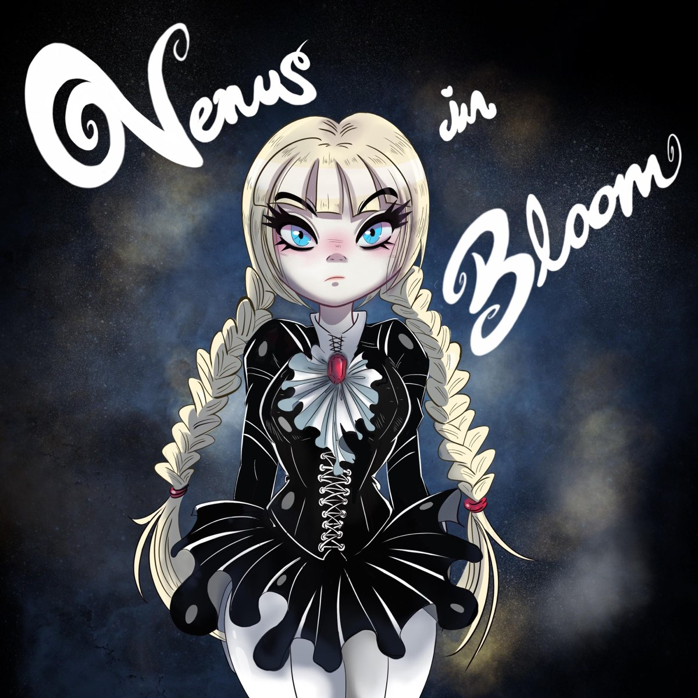

Pink Dwarf (2018)

Este es el primer EP lanzado por la banda en el año 2018. Contiene las composiciones mas crudas y directas que han compuesto. Se caracteriza por un sonido que recuerda al rock de garage con letras llenas de angustia y desamor. En la portada podemos admirar a Venus la musa que representa las emociones que la banda pretende transmitir con este material.
- Tylenol (For a Broken Heart)
- My Love is True
- Sexy Lady
- Flying Dragons
Eva (2019)
El segundo EP contiene un lado de la banda, hasta el momento, no explorado. Si bien la mayoria de las composiciones se desarrollaron en conjunto a las canciones de Pink Dwarf, este EP nos presenta un lado que deja al descubierto un lado emocional mas introspectivo y composiciones con estructuras mas dinamicas. En esta portada nos presentan a Eva quien es la otra cara de la moneda que comparte con Venus. Su cancion homonima es la que da nombre a este EP.
- Eva
- Gloomy
- Howling
- Falling
Numero 3 (2020)
Por primera vez el grupo se atreve a producir material en su lengua madre; el Españoi. Nos presentan dos composiciones que toman inspiracion de la cultura musical que los rodeo durante sus infancias. La primera, una cancion que nos pone en los zapatos de una persona atormentada por los errores que cometio en el pasado y que solo le queda el ahogarse en su arrepentimiento. La segunda, nos presenta un protagonista que poco a poco se comienza a perder en sus delirios y que, posiblemente, perdio la nocion de lo que es su verdadera realidad. Notablemente Venus y Eva comparten portada (Que por cierto fue sujeta a censura en su version original). Para la banda cada personaje representa una cancion, cual representan para ti?
- Penitencia
- Despedida
Mourning Star (2022)
Despues de dos años Venus in Bloom regresa con un sencillo. A diferencia de lanzamientos anteriores este es solamente un sencillo. Sin embargo, esta repleto de primeras veces para la banda; es la primera vez que el sintetizador cobra un notable protagonismo en la composicion, una estructra mas experimental que anteriormente y un nuevo equipo de produccion. Esta cancion se caracteriza por su dramatismo y sonido heavy. Son 6 minutos donde el escucha es invitado a experimentar una experiencia de vida desde el punto de vista de una de las letras mas nihilistas de la banda. Por primera vez en su carrera, la presencia de Eva y Venus en la portada brilla por su ausencia. En su lugar, somos invitados a contemplar una imagen de destruccion de proporciones cosmicas, sin olvidar que a veces la destruccion nos abre las puertas para la reconstruccion y reinvencion. Esperemos que esta sea la construccion de una neva era para Venus in Bloom!